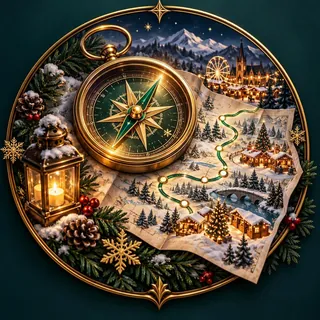

Willkommen zurück
Plane den nächsten Ausflug oder entdecke ein neues Winterziel.

NÄCHSTER TRIP
Weihnachtsmärkte entdecken
Von gemütlichen Wochenendmärkten bis zum großen Winter-Tagestrip.
Trip planen
DEIN WINTERZAUBER
0 / 17Mein Sammelalbum
Besuche Märkte und schalte einzigartige Artworks frei.
Wintertagebuch
Mehr
Meine Trips
Datensicherung
Sichert Trips, Favoriten, Tagebuch und Stickerfortschritt.